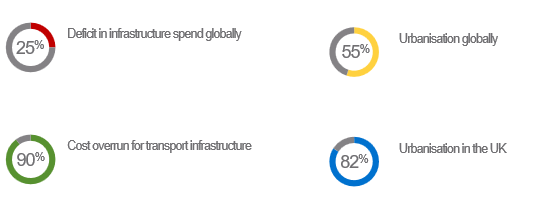

Joe's First Presentation
The first fore into using webslides and html editors for presentations. To view my website:
Preselecting the digitisation effort
Using graphs to find complexity
identification of complexity
Structural, information flow
Framework for chosen data sources
mapping and model selection
Application and analysis of chosen techniques
Time saved
Issues in construction
inefficient

Surgical infrastructure systems!
It's been a pleasure to be here.